MagiLex から
MagiBattle まで。
学ぶ・あそぶ・みんなで囲む・つながる。XEVARION のひとつのアカウントで使える 28本のアプリを、企画から演出まで手がけています。
4社で、
XEVARION を。
NGX・Magical Future・ISHIDA Production、そして運営協力に参入した YRA。起動の画面に並ぶ4社のロゴとともに、毎日の体験をお届けします。
お店の注文を、
スマホから。
ORDYXIS は、お客様の端末で注文し、番号でお呼び出しする店頭オンラインオーダーシステム。ISHIDA Production が製作パートナーを務めています。
開発アプリ一覧
MagiLex をはじめ、XEVARION のアプリ 27本と、店舗の注文システム ORDYXIS。どれもひとつのアカウントで、記録と XEVA がつながります。
 化学の問題集MagiChemLex入試問題の改題・基礎セット・単元別の関連問題。間隔反復の復習、模試の冊子、フラッシュカード、毎月のビンゴ。
化学の問題集MagiChemLex入試問題の改題・基礎セット・単元別の関連問題。間隔反復の復習、模試の冊子、フラッシュカード、毎月のビンゴ。
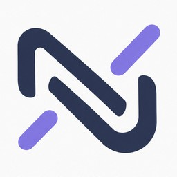
学習AIXEVYNARXEVARION の学習AI。勉強のプラン・タイマー・記録に加えて、わからない問題のくわしい解説や苦手問題づくりも。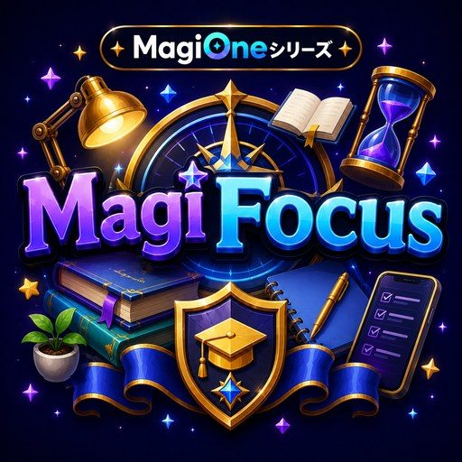
学習管理MagiFocus手とスマホを見張る AI で勉強を守る学習管理。タイムライン・予定カレンダー・実績つき。 シューティングRPG・NEWMagiBattle2026年10月に1から作り直し。後ろから見たドット絵の5人で撃つ遮蔽物シューティングと、ほかのプレイヤーと競うアリーナ。
爽快アクションMagiBurst引っぱって、はなして、ぶっとばせ。最大4人マルチの引っぱりハンティング。
シューティングRPG・NEWMagiBattle2026年10月に1から作り直し。後ろから見たドット絵の5人で撃つ遮蔽物シューティングと、ほかのプレイヤーと競うアリーナ。
爽快アクションMagiBurst引っぱって、はなして、ぶっとばせ。最大4人マルチの引っぱりハンティング。
 ドットアクションRPGMagiAbyss広大な迷宮を探索し、大量の敵をなぎ払う見下ろし型の RPG。武器・魔法・装備の組み合わせで自分だけのビルドを。
競馬 GⅠMagiDerby実際の JRA 平地 GⅠ に XEVA で賭ける。出馬表・オッズ・結果・払戻金はすべて本物を自動取得。
ドットアクションRPGMagiAbyss広大な迷宮を探索し、大量の敵をなぎ払う見下ろし型の RPG。武器・魔法・装備の組み合わせで自分だけのビルドを。
競馬 GⅠMagiDerby実際の JRA 平地 GⅠ に XEVA で賭ける。出馬表・オッズ・結果・払戻金はすべて本物を自動取得。
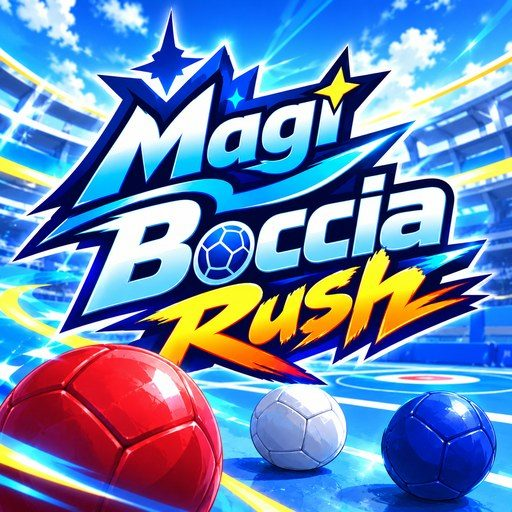
ボッチャ対戦MagiBocciaRush本格ボッチャ × 引っぱりショット × キャラクターの固有能力。3人の編成で投げる戦略スポーツ。 鉄道経営シムMagiRail街の需要を読み、本数・編成・車両を調整して利益と輸送効率の両立をめざす。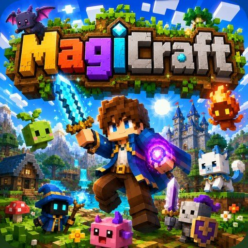
3DクラフトMagiCraft3D のボクセルワールドで掘って・作って・育てて、次元魔神を討つ探索アドベンチャー。 探索ホラーMagiManor不気味な洋館からの脱出を目指す 2D 探索ホラー。謎解き・追跡者・6種類の結末、最大4人の共鳴探索も。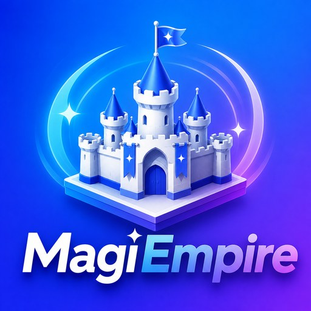
国盗り対戦MagiEmpire1台で 2〜4人の国盗り対戦。アクション版とじっくり陣取りの2つを収録。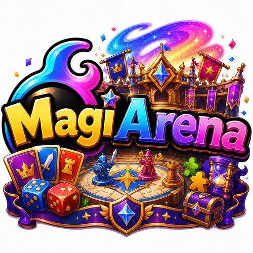
対戦の闘技場MagiArena1台でみんなと対戦する闘技場。オリジナルの陣取りに、オセロ・五目並べ・神経衰弱も。2〜6人。 カジノ・パーティーMagiJackpotXEVA とジェムで遊ぶカジノ＆パーティー。スロット・ブラックジャック・パチンコに、パーティーとオンライン対戦も。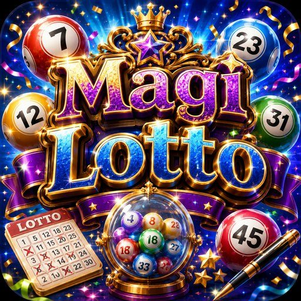
デジタル宝くじMagi Lottoジェムで買って XEVA で受け取るデジタル宝くじ。スクラッチ・ナンバーズ・ロトなど5本柱。 連鎖陣取りMagiChainPartyiPad を囲んで遊ぶ、連鎖バクハツの陣取り頭脳戦。運の要素ゼロ・2〜6人・CPU・オンライン。
連鎖陣取りMagiChainPartyiPad を囲んで遊ぶ、連鎖バクハツの陣取り頭脳戦。運の要素ゼロ・2〜6人・CPU・オンライン。
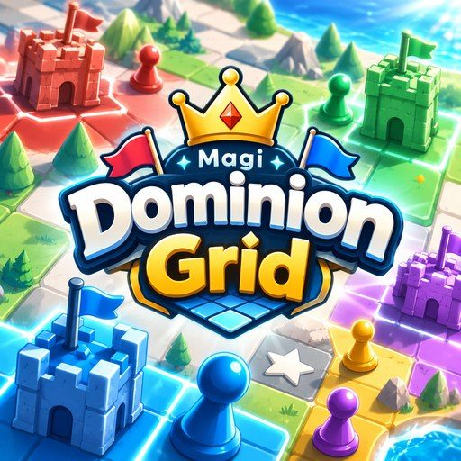
思考の陣取りMagi Dominion Grid2〜10人が同時に行動をえらぶリアルタイム陣取り。勝ち負けは盤面の読みだけで決まる。 対戦ボードゲームMagiShift置いた駒をあとから動かせる、マルバツを発展させた2〜8人の対戦ボードゲーム。 化学クイズ対戦MagiQuiz1台を囲んで化学の基礎でクイズバトル。ミリオネアとばくだんの2つの遊び方。 つながり・交流MagiLink友達やグループとつながるメッセージアプリ。コレクションの共有にも対応。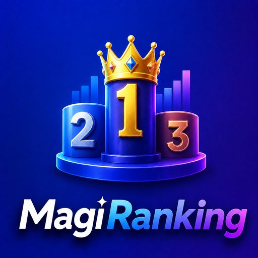
月間ランキングMagiRanking獲得 XEVA の合計を毎月集計して順位を競う月間ランキング。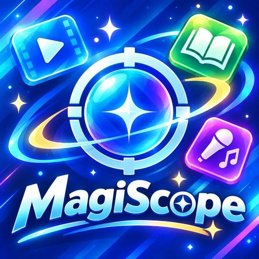
エンタメランキングMagiScopeアニメ・カラオケなどの実際のランキングを、1時間ごとに自動で更新。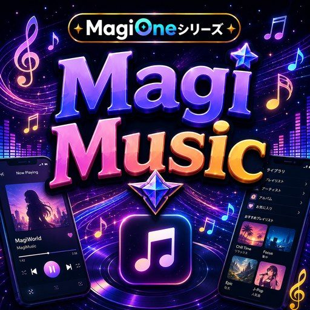
音楽プレイヤーMagiMusicXEVARION の音楽をいつでもどこでも。回転ディスクとビート連動の演出、バックグラウンド再生。 持ち株管理MagiPortfolio買った株を登録するだけの持ち株マネージャー。伸び率・評価損益・資産配分を一覧で。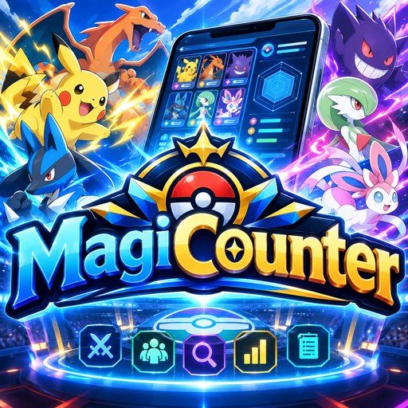
対戦支援・編成分析MagiCounter対戦ゲームの対策・分析ツール。相手を分析して、最適な3体の選出と編成の改善までをスマホで。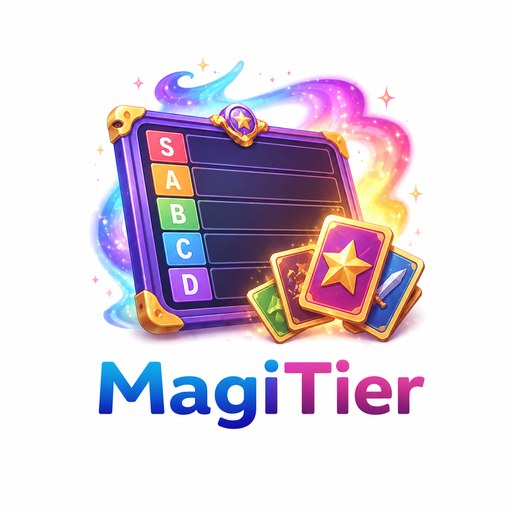
Tier表作成MagiTierTier 表の作成からプレゼンまで。カードを並べ替えて、自分のランキングを発信。 店頭オーダーORDYXISお客様の端末で注文、店舗で受付、番号でお呼び出し。店頭モニターでのご案内まで。私たちの強み
小さく速く、しかし妥協しない。ISHIDA Production が大切にしていること。
マルチデバイス
iPad を囲む対戦から、お店の業務端末、スマホのホーム画面アプリまで。どの画面でも快適に動き、電波の無いところでも開けるように作ります。
明るく、迷わないデザイン
親しみやすく、ひと目で分かる。ドット絵・カットイン・ガチャの演出まで、遊び心のある表現を自分たちで描き起こします。
堅牢な実装
途中保存・やり直し・オフラインでも動くしくみ・端末をまたぐ同期。毎日使っても壊れない細部まで作り込みます。
制作の流れ
ご要望をいただいてから配信まで。週に何度も届けるアップデートを、6つのステップで回しています。
- 01ご要望の整理
届いたご要望をひとつずつ一覧に。後回しにするものも記録して、取りこぼしません。
- 02設計と相談
見え方・性能・遊び方など大きな分かれ道は、選択肢と見本をそえてご相談します。
- 03開発・演出
実装とアートを同時に。ドット絵やカットインまで、その場で描き起こします。
- 04検証
実際のブラウザで操作・同期・オフラインを確かめ、データの不具合は元の情報までさかのぼって直します。
- 05配信
版ごとにまとめてお届け。更新画面のダウンロード量・お知らせ・デベロッパーノートまでそろえます。
- 06改善
使われかたとご報告を見ながら、次の版へ。ご報告は真因を見つけてから直します。
制作の歩み
2026年、XEVARION とともに増えてきたアプリと大きな更新。
- MagiBurst のフェスが開幕
最初のフェスガチャ。キャラクターとガチャは、のちに XEVARION 全体で共通に。
- XEVARION のガチャ・図鑑を一本化／Xevion OS
ガチャと図鑑をポータルへ集約。設定と見た目をまとめる Xevion OS、オフラインの自動更新。
- Magi Dominion Grid
1台を 2〜10人で囲む、運の要素ゼロの陣取り。
- MagiBocciaRush
本格ボッチャと引っぱりアクションの対戦スポーツ。
- MagiRail・MagiScope・MagiShift
鉄道経営シム、実際のランキングを届けるエンタメ情報、2〜8人の対戦ボードゲーム。
- MagiAbyss
見下ろし型のドットアクション RPG。のちに 2.5D の町と HD ドットへ。
- MagiChemLex
化学の問題集。改題・基礎・単元別・模試の冊子・ビンゴ。
- MagiDerby・MagiQuiz／MagiLex の入口
実際の JRA GⅠ の競馬、1台で遊ぶ化学クイズ。MagiLex は MagiChemLex と旧MagiLex の入口に。デベロッパーノートを開始。
- 4社体制
YRA が運営協力に参入。起動の画面に4社のロゴ。
- MagiBattle を1から作り直し／XEVARION の機能紹介
後ろから見たドット絵の5人で戦う遮蔽物シューティングとアリーナに。XEVARION の全機能を動きで紹介するガイドも。
ニュース
ISHIDA Production と、制作に関わるプロダクトの最新情報。
お問い合わせ・サポート
制作のご相談・協業のお問い合わせは、XEVARION のアプリ内のサポートから受け付けています。